Rgedit 0.8 Help
(c) 2009 - 2012, Dan Dediu
First, please be aware of several potential security issues when installing new wizards!
Table of Contents
Introduction
Main features
Wizards
Profiles
Notes and FAQ
Acknowledgements
Introduction
Rgedit 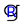is a gedit plug-in tranforming it into a light weight IDE capable to interface primarily with the statistical programming environment R , but also with other interactive software packages such as Octave  and Pyhton , and even work remotely through, for example, SSH connections.
and Pyhton , and even work remotely through, for example, SSH connections.
The project was
inspired by the amazing rkward , JGR , Tinn-R
and RStudio (congratulations for a very good job!), which provide full-featured
IDEs for R, designed for KDE , Java , MS Windows 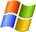, and cross-platformm
respectively.
Rgedit, however, aims to offer a
simpler set of features than them,
providing the proficient/professional R (and Octave, Python, etc.) user an environment which would
boost their efficieny while keeping interference and resources
consumption to a minimum. Moreover, by using GTK+ 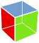 and gedit,
it is better suited not only to users of Gnome and Xfce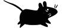, but also
to those who prefer for example Openbox or Fluxbox and their
own collection of applications. In fact, Rgedit
is designed to facilitate working with R (and Octave, Python, etc.) under Linux
more or less independently of the Window Manager/Desktop Environment (I now work primarily on OpenSuse and CentOS , but this project was developed and used also on Debian , Archlinux and Ubuntu ).
Main features
Below is a screen shot
of a session using Rgedit
(screenshots taken on a variety of systems: Debian Lenny/Gnome,
ArchLinux/Xfce & Openbox, Debian Squeeze/Xfce, Ubuntu 10.04/Gnome).
This shot illustrates some of the main features of Rgedit:
- advanced editing offered
by gedit, including multiple tabs
each containing a different document and syntax highlighting;
- bottom panel containing one or more different consoles
which can be accessed using the tabs on the right hand side (in this
case, there are two R consoles open);
- these tabs can have custom
names, color schemes and prompts for easy identification;
- the capacity to run the
current line, current selection or the whole source file by clicking
the appropriate buttons in the
toolbar;
- the capacity to define blocks
of source code - which are smart enough to take into account
editing - and run them (in this shot, there is a block defined between
lines 29 and 37);
- basic code folding: line 41 is the "head" of a whole section of source code, with
the tooltip showing the first and last couple of folded lines;
- an optional left panel tab
showing the most important elements of the R file (function defintions,
data.frame defintions and custom landmark comments) and allowing fast
navigation with the mouse;
- profiles are a very powerful and general mechanism allowing the user to use not only R but also Octave, Python or even conduct remote sessions over SSH, but to define his/her own profile or customize them to his/her own environment (for more information please see here).
More options are provided by the R
menu captured below:
The options accessible
through the "Configure R interface" menu are the same as those
accessible through gedit's plug-in configuration and are shown
below:
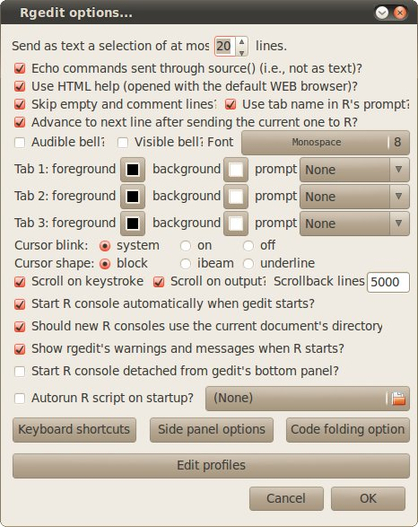
- "Send as text a selection of at
most NNN lines": implicitly, the current
line and current selection are sent to the R console as if typed by the
user using the keyboard, while the whole file and the source blocks are
sent using R's source()
function through a temporary file. The obvious advantage of the first
method is that the line(s) are available in the history using the Up
and Down keys, but it is limited by the size of R console's buffer.
Therefore, it is recommended that selections larger than NNN lines be sent using the source() method;
- "Echo commands sent through source() (i.e., not as text)?":
uncheck if you want to avoid seeing the actual commands piped to the R
console using source(). This could be useful when sending large
quantities of text to R and the interest is mainly in the actual
results produced;
- "Use HTML help?": if
using HTML help the help pages will be opened using the current Web
browser, otherwise the within-console system will be used;
- "Advance to next line after
sending the current one to R?": if yes, the editor will make the
next line current, otherwise the current line will stay the same;
- "Audible bell?" and "Visible bell?": console options
concerning the bell;
- Each of the (at most
three) tabs containing an R console can have its own "foreground", "background" and R "prompt" colors (but see note v);
- "Use tab name in R's prompt?":
should R's prompt contain the tab's name in addition to the standard
">" and "+" symbols? You can rename a tab by
right-clicking inside
its R console, select "Tab name"
from the menu and change the name in the dialog box (see screencaptures
below);
- "Cursor blink": the
cursor in the R console can use either the system blinking settings,
can blink anyway or not;
- "Cursor shape": the
cursor
in the R console can be shaped as a block, beam or line;
- "Font": allows the user
to select the font used by the R console;
- "Scroll on keystroke?"
and "Scroll on output?": should the R console
scroll on these two events?
- "Scrollback lines NNN": how many lies to keep
in the R console's history?
- "Start R console automatically
when gedit starts?": if yes, the first R console will
automatically start when gedit starts, otherwise the user will have to
explicitly spawn it using the "Create new R workspace tab..." command:
this conserves resources when gedit is rarely used to edit R code;
- "Should new R consoles use the current document's directory?": if checked, all newly started R consoles try to set the working directory to be the current' document's directory;
- "Show rgedit's warnings and messages when R starts?":
if checked, then upon starting a new R console the most current
warnings and messages (concerning new features and issues) are
displayed as comments in the R consoles;
- "Start R console detached from
gedit's bottom panel?": if yes, the R console will
automatically start detached (as a separate window; see below);
- "Autorun R script on startup?": if yes, automatically runs a user-specified R script with an R console starts (or restarts);
- "Edit keyboard shortcuts":
allows the user to define custom keyboard shortcuts through the dialog
shown below. The shortcuts are introduced as text like
"<Ctlr><Alt>X" or <Shift>P> or "None" if no
shortcut is desired. For sending the current line/block/file/selection to R, "special" shortcuts involving Return and modifiers (<CTRL>,<SHIFT>,<ALT>) can be defined. Moreover, <Ctrl>C
in the R console can be defined to copy the current selection (as in
gedit itself), in which case <ESC> and/or <Ctrl>Q can be
defined to do its job (i.e., to interrupt the current R task). Please
note that gedit (actually, the plug-in)
must be restarted for these
changes to take effect. Also, shortcuts already used by gedit are
unavailable;
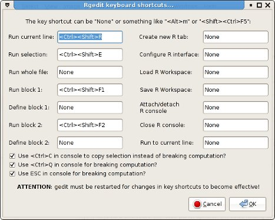
- "Side panel options":
allows the user to define behaviour of the side panel tab showing the most important landmakrs in the R document. The landmark comments are specially structured comments of the form # @@ RGEDIT LANDMARK @@: your text goes here which allow the user to define important places in the R document (by replacing the your text goes here
with the desired information). These can be directly written in the
document or inserted at the desired place using the right-click menu's
or the R's menu Insert Landmark Comment.
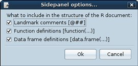
- "Code folding options": while waiting for proper cde folding to be implemented in gtksourceview,
the code folding engine provided by rgedit is fairly basic but
functional. Its options can be accessed through the right-click menu
within the editor view and provides the following possible actions
depending on the context:
- "Fold block containing current line": this looks through the sourcecode and finds all valid R blocks (i.e., enclosed between { and }) containing the line on which the right-click was produced. Then, depending on the user's options as specified in the Code folding options
dialog, it folds the highest level (i.e., largest) containing block,
the lowest level (i.e., smallest) containing block or the
highest/lowest level function() block;
- "Fold current selection": if there is a text selection, then the user can fold it;
- "Unfold code on current line":
if the right-click occured on a line containing folded text (marked by
color, text style, left-margin icon and a specific tooltip), the user
can unfold it;
- "Unfold all folded code": this will unfold all (if any) folded code in the current document;
- "Inspect folded code...": if the right-click occured on a line containing folded text (marked by
color, text style, left-margin icon and a specific tooltip), the user
can insect its content in a dialog box without actually unfolding it;
- "Edit profiles": adds/deletes/changes profiles.
Please note that some changes
affecting R
consoles (namely Use HTML help?,
Use tab name in R's prompt? and
prompt color) assume that R is
running in the console and that R is actually able to process commands.
This is because these change R options through option() commands which must be
changes for the process to succeed; therefore, please avoid making this
kind of changes when R is not running in one of the consoles or when
typing commands to R or R is busy doing something.
The R consoles can be either attached to (embedded in, see bove) gedit's bottom panel (the default)
or detached (a stand-alone
window, see below), in which case
they can be moved and resized at will. When detached, Ctrl+Tab does not work, but the
standard window manager's windows switching shortcut (usually, Alt+Tab) does. Also, the position
and size of the detached R console is saved and automatically restored.
To switch between the attached and detached states use the Attach R Console/Detach R Console menu
entry or simply close the detached R console to embed it. The "Start R console detached from gedit's
bottom panel?" option controlls if the R console starts detached
or attached (the default).
From the R console's context menu (right
click) you can:
- Copy and Paste: from and to the R console. <Ctrl+V>
is the keyboard shortcut for paste and, if defined, <Ctrl+C> for copy (also see note
iv);
- Change the tab's name:
see details above;
- Always show tabs?: if checked show the tab even if a single R console exists;
- Show tabs on: defines the side of the bottom panel on which the R console tabs will be shown;
- Close the tab: you can
close the current tab (but not the first one) by sending a SIGHUP signal to the shell process
within which R is hosted;
- Start R and Restart R: these two commands start
a fresh R session in the current console (tab), the only difference
being that Start R assumes
that the bash session is active and ready to process user input (e.g.,
after quitting R and working in bash for a while) as it simply starts a
session with R --no-save
--no-restore, followed by the appropriate option commands (e.g.,
options(htmlhelp = TRUE)
and options( prompt="2> ",
continue="2+ " )), while Restart
R assumes a running and ready R session, as it first quits it
with q() and then calls
the Start R commands (see note
viii as well);
- Change R's working folder:
allows the user to select the desired working folder and changes it
(assumes a running and ready R session as it send a setwd("<selected_directory>")
command; see note viii as
well);
- Use document's folder: changes R's working directory to the current document's directory;
- Load and Save R Workspace: allows the user to interactively load and save R's workspace.
Pressing Ctrl+Tab in a gedit
document/tab will give the focus to the bottom pane and if the active
tab in the bottom pane is an R console, pressing Ctrl+Tab again will give back the
focus to the active gedit document/tab. Thus, assuming that an R
console is active in the bottom pane, Ctrl+Tab
switches the focus between it and the active document.
Please note that when the R console is detached, Ctrl+Tab is replaced by the window
manager's window switching mechanism (in most cases, Alt+Tab).
One possible use scenario for rgedit is to edit a line of code in the R
console using the various TAB-completion capabilities and incrementally
test it, and then paste this working code in the R script: now this
scenario is helped by two keyboard shortcuts in the R console: <Ctrl>K copies the last executed R line to clipboard, while <Ctrl><Shift>K also pastes this in the current gedit document at the cursor's position.
Selecting the "Close R Console"
menu will close all open R tabs as well as the bottom panel
tab/detached window containing R, in effect, closing the whole R
console by seding to all running shells a SIGHUP signal.
Wizards
From the user's point of view, Wizards
are standardized dialogs allowing him/her to interactively define
various parameters and which, in the end, generate pieces of R code to
be run in the console, pasted in the R current document or both.
Wizards can be accessed either through the R menu or through the right-click menu and as an example we will use the Wizard for plotting a histogram:
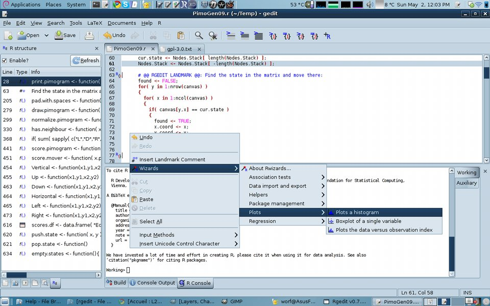
Selecting the Plots a histogram menu opens the wizard with the default values:
The user can give/select the relevant parameters using the messages, tooltips and the help page prduced by clicking on the Help button, as exemplified below:
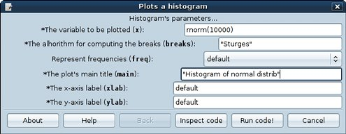
By clicking Inspect code a
widnow is opened presenting the user with the actual R code which will
be generated using his/her values for the parameters. This code is
generated from a predefined template (see below) and can be edited and
checked for any possible issues:
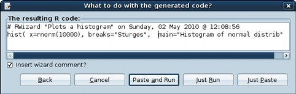
In this case, the code simply draws a histogram (hist()) using the defined x parameter (in this case, rnorm(10000), but one could use already defined variables: for example, we could have already defined x.test <- rnorm(10000) before calling the wizard, in which case using x.test as the value of x would be meaningful and produce the same outcome). Clicking Paste and Run
both pastes this R code in the current document at the cursor's
position (lines 745-746 in the screenshot below) and runs the same code
in the current R console (last 2 lines in the R console in the
screenshot), producing, as expected, the histogram in the image:
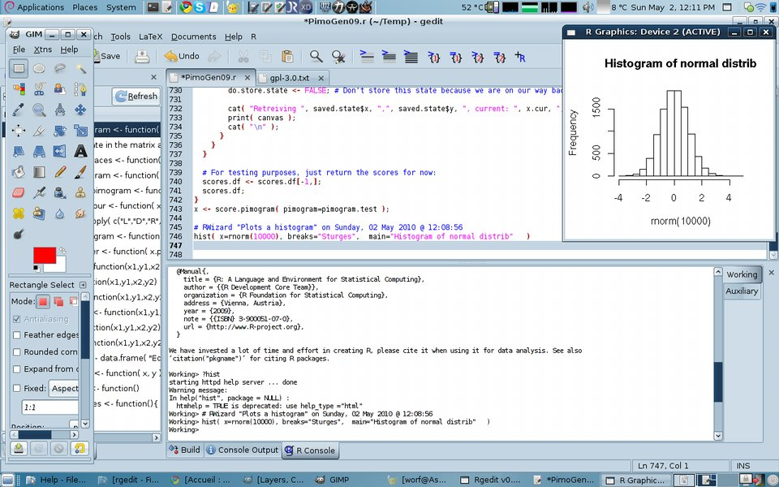
This is just a simple wizard for illustration purposes, but more complex wizards can have more than a single dialog and Back and Next allow the navigation through them.
Wizards can also use the current selection in the current document as
the value of a specially-defined parameter, like, for example, the Wizards -> Helpers -> View and edit -> View dataframe or matrix, where, for example, if we select rnorm(10000) in line 746 in the above screenshot, results in rnorm(10000) being automatically taken as the thing to be displayed:
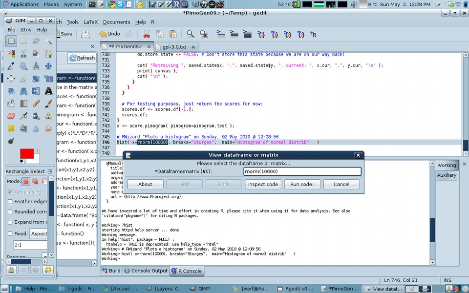
The fileds marked with a star (*) are required fields which must be defined before the wizard can successfully end.
A special class of wizards have no interface (i.e., the user does not
need to give any parameters through this interface), as is the case for
the Package management
wizards, allowing the user to install, update and load packages through
a pre-defined GUI (similar to the standard interfaces on Windows and
Mac OS).
This set of core packages is released independently of rgedit and the
initial version (0.1) contains a small set, mostly for demostration
purposes, which is expected to increase:
- Association tests
- Correlation: basic correlation between two numeric vectors, illustrating a wizard with two dialogs;
- Data import and export: saving, loading and importing data from and to R
- Write data to flat file
- Write R data to file
- Read data from Excel file
- Read data from flat file
- Read data from SPSS file
- Read previously saved R data
- Helpers:
- Search help: search the help for a keyrowd using ?
- View and edit:
- View dataframe or matrix: showData()
- Edit dataframe or matrix: fix()
- Package management:
- Install packages from a CRAN mirror
- Update packages from a CRAN mirror
- Choose CRAN mirror
- Load package
- Plots: basic plotting functions, for illustration purposes
- Plots a histogram
- Boxplot of a single variable
- Plots the data versus observation index
- Regression:
- Logistic regression
- Multiple linear regression
Thus, wizards allow rgedit to become more user-friendly, especially for
those learning R, by encapsulating frequently used and/or complex R
scripts in a series of menus and GUIs.
However, the real power of wizards is that, by contrast to other
packages offering menus and GUIs over R (Windows and Mac OS interfaces,
rkward, Rcommander, etc), they can de very easily created and changed
with minimal programming skills. In fact, a wizard is an XML file
defining the parameters of interest, the R template and the mechanism
of transfroming these two into the final, customized R code the user
want. I will illustrate these below using the same Plots a histogram wizard. The wizard is defined in the plots_hist.xml file in the Wizards folder of the rgedit folder (usually, ~/.gnome2/gedit/plugins/RCtrl):
01 <!-- Define a rwizard -->
02 <rwizard name="hist" description="Plots a histogram"
03 menu="/Plots" icon="plots_hist.png">
04 <about
05 name="Histogram"
06 version="0.1"
07 copyright="(c) 2010 Dan Dediu"
08 comments="Plots a histogram. Inspired by R Commander's 'Histogram'"
09 license="GLPv3"
10 website="http://rgedit.sourceforge.net/"
11 authors="Dan Dediu <ddediu@hotmail.com>"
12 documenters=""
13 artists=""
14 translator_credits=""
15 logo_icon_name="plots_hist.png"/>
16
17 <help rhelp="?hist"/>
18
19 <vars>
20 <block title="Histogram's parameters...">
21 <variable name="x" description="The variable to be plotted" type="text" default="" required="True" tooltip="Must represent a numeric vector"/>
22 <variable name="breaks" description="The alhorithm for computing the breaks" type="text" default='"Sturges"' required="True" tooltip="See documentation for possible values. Please quote strings!"/>
23 <variable name="freq" description="Represent frequencies" type="list" singlechoice="True" default="0" required="False" tooltip=''>
24 <value name="default"/>
25 <value name="TRUE"/>
26 <value name="FALSE"/>
27 </variable>
28 <variable name="main" description="The plot's main title" type="text" default="default" required="True" tooltip="Make sure to quote fixed strings!"/>
29 <variable name="xlab" description="The x-axis label" type="text" default="default" required="True" tooltip="Make sure to quote fixed strings!"/>
30 <variable name="ylab" description="The y-axis label" type="text" default="default" required="True" tooltip="Make sure to quote fixed strings!"/>
31 </block>
32 </vars>
33
34 <!--
The actual R code template: only strange things are the placeholders
call using ${PLACEHOLDER_NAME} and the Python code $[...$] -->
35 <template>
36 hist( x=${x}, breaks=${breaks} $[Python '' if '${freq}'=='default' else ', ${freq}' $] $[Python '' if '${main}' == "default" else ', main=${main}' $] $[Python '' if '${xlab}' == "default" else ', xlab=${xlab}' $] $[Python '' if '${ylab}' == "default" else ', ylab=${ylab}' $] )
37 </template>
38
39 </rwizard>
|
The rwizard element defines the wizard with the given unique name (used internally only), a short description (used to generate the menu), the path in the Wizards menu where to insert this wizard and an optional icon file.
It can have an About box defined by the about element: please note that given that this is an XML file, one must use escape sequences like < for < and > for > as done in the authors attribute to give the e-mail address!
It can also have some html information, given by the help element, which can have any of the following attributes: file (give a local file), url (a remote file) or rhelp (giving an actual sequence of R command to be run in order to procude the help).
The vars element contains one or more block elements. One block creates a dialog box (like the one exemplified above for Plots a histogram) containing fields as defined by the contained variable elements. One variable element defines a single variable with a given name, a description of the variable, a type, a default value, a flag specifying if it is required for the variable to have a non-empty value in order for the wizard to finish correctly and an optional tooltip text to be displayed when the mouse is over this variable in the dialog box. There can be several types of variables:
- "text" is the simplest and means that the variable can be any text and creates a one-line edit widget in the interface;
- "list" represents a list of pre-defined values (given by the value elements) and the user can select one (singlechoice="True") through a combobox widget; default in this case is the number of the default choice, starting at 0;
- "editablelist" is a list of pre-defined values (given by the value elements) but the user can introduce a new one as well, through an editable combobox widget; default in this case is a free string, as for "text";
- "bool" is represented by a checkbox widget and stands for a boolean value.
Finally, the template
element gives the R code template and the replacement rules. This gives
a fragment of text which is transformed into actual R code to be pasted
into the current document and/or to be run in the R console simply by
copying it literally except for replacing the variable placeholders with their actual values and running any given Python code and replacing it with the resulting value.
For example, line 36 begins with hist( x=${x}, . A variable placeholder begins with ${ and end with } and contains the name of a variable defined by a previous variable element, in this case, x defined on line 21 as being a required text. Suppose (as in our Plots a histogram example) that the user has typed rnorm(10000) as the value of x; then, ${x} will be replaced by rnorm(10000), producing the final text hist( x=rnorm(10000), . Similarily, ${breaks} will be replaced by "Sturges".
However, now we encounter a Python fragment, marked by $[Python and $], and which contain a Pyhton expression which will be evaluated by the Python interpreter to produce a value. Please note that the evaluation taks place after all variable placeholders (if any) are replaced by their actual values, as just described. Thus, $[Python '' if '${freq}'=='default' else ', ${freq}' $], will give $[Python '' if 'default'=='default' else ', default' $] after replacing ${freq} by its given value default
(very importantly, please note that quotes are not automatically
provided in this replacement process and have to be given explicitely,
if necessary! This is why the title of the plot, in this case, must be
given with quotes if it is a fixed string - see the tooltip message).
Afterwards this Python code is evaluated to '', which will replace this whole code in the end.
After all these replacements, the template defined in line 36 will be replaced by the text hist( x=rnorm(10000), breaks="Sturges", main="Histogram of normal distrib" ), which will be presented to the user for pasting/running (as shown above for Plots a histogram).
This mechanism allows the quick defintion of complex wizards through an
easy to understand XML file. Moreover, it is very flexible and powerful
as we can use Python code to post-process the values given by user in
order to generate complex fragments of R code. However, there are two
potential security issues:
- in order to unleash the full power of Python (an example of complex string processing is given by the plots_index_plot.xml wizard), the Python code defined within $[Python and $] is allowed access to the __builtins__, which means that malicious code can even delete all your files (see here a discussion: http://diveintopython3.org/advanced-iterators.html#eval)
- even if the Python code within the template won't format your HDD and eat your cat, there is the possibility that the generated R code will do that.
Thus:
CHECK THE WIZARDS FOR NASTY PYTHON AND R CODE!
INSPECT THE GENERATED R CODE UNLESS YOU TRUST THE WIZARD!
Don't say you haven't been warned! If you don't have any wizards
installed or you have checked those you have, then you should be safe.
And to close on an optimisitc note, you can write your own wizards!
Profiles
Profiles are very flexible and powerful and have their own dedictaed help file (also accessible from rgedit's "Edit profiles" dialog) here.
Notes and FAQ
These are several
notes and questions on
different aspects of Rgedit:
- Quitting R in a console:
it is possible to quit R in an R console in the usual way (i.e, q()) but note that the
workspace is not automatically saved on exit nor is the system asking
you for that (namely, the R sessions are spawned with --no-save --no-restore
arguments). Upon quitting, a standard shell is available from with R
can be relaunched (with R
--no-save --no-restore) or any other command executed as you
would do from a normal shell;
- Closing
R console tabs:
there can be at most three R console tabs simultaneously open and only
consoles 2 and 3 can be closed. To do this, quit R in the standard
manner (see above) and simply type exit when in the shell. Typing exit in the first R console
(after quitting R there) will have no effect (technically, it will
respawn a shell after
quitting the current one);
- Defining, running and deleting
source code blocks: blocks are contiguous sequences of source
code starting at the begining of a given line and ending at the
begining of another line. They are marked with symbols in the left
margin and colored background. There can be only two blocks defined at
any moment in a given source file, identified as block 1 and block 2.
Block 1 is marked with symbols 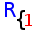 and 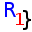 and the background color is light blue (for
an example, see the first screenshot),
while block 2 is marked with symbols 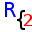 and 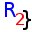 and the background color is gold. Defining a block
is very easy: just select the lines you want to be contained (not
necessarily starting at the beging of the first and ending at end of
the last line) and press the define block 1 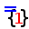 or define block 2 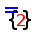 toolitem or menu entries: if
the block was already defined it will be simply replaced with the new
one. Please, note that the last line of the block is actually the
beginning of the last selected line plus one. Editing the text within a
defined block will cause the block to automatically adjust;
- Copy and
paste in the R console:
in an R console, <Ctrl+V>
can be used to Paste but <Ctrl+C> can still used to stop the current R process, but it can also be allowed to copy the current selection; however, the right-click menu gives easy access to Copy
and Paste actions;
- Text
coloring in R console:
due to the fact that the interaction with R is done through the
terminal (see note viii), the
amount of coloring text is limited; however, the R promot
can be colored using xterm
escape sequences and this helps a lot in easily identifying
commands entered as opposed to text produced by R. However, due to the
way in which the prompt character length is computed by R's line
editor, these escape sequences are considered by R as actual
characters, resulting in corruptions
of the current line (extra characters at the begining). If the
advantage of having a colored prompt exceed the corruption of the
current line during editing, then feel free to enable this option;
- Icons and artwork in general:
as you have probably noted, I am definitely not the most
gifted artist in the Universe! Couple this with my tendency towards
minimalism and you get the icons and design in Rgedit. However, .if you have better
skills and ideas, please consider contributing to the project on SourceForge.
- GTK+ and Python programming:
also, please note that even if I do have a lot of (especially C/C++)
programming experience, this is my first ever project using GTK+
and Pyhton
(more exactly, PyGTK), so please
be
forgiving about less than optimal (to be nice) programming decisions.
Again, if you feel you can improve bits an pieces please consider
contributing to the project on SourceForge;
- Why
communicate with R through
the console as opposed to embedding the shared library? This is
a legitimate question, given that the embedding of R's shared library
is the
recommended strategy for building R GUIs and a number of R IDEs
(including rkward) do it
this way? Well, this decision has both pros and cons (as usual). The cons are obvious and
include limited interaction with R (e.g., Rgedit
cannot browse, display and edit in a nice way the defined objects in
the current workspace) but the pros
include a lighter and
faster IDE which does not require any compiling nor does it bring R
down because of its own bugs (no
criticism of other IDEs intended!). Plus, it's much easier to write and
maintain. If you think otherwise, please let me know your reasons and
suggestions and either contribute to this project, start a new one or
use one of the other IDEs/editors listed here;
- To whom is Rgedit best addressed?
I designed Rgedit with the
proficient/professional R user in mind, a user which does not need a
menu-driven interface to data analysis but is comfortable with the
script itself, the R extensive help and R's website search facilities.
Such a user supposedly would need a way to edit their extensive and
complex R scripts and a good editor like gedit would obviously help.
They would also need a way to pipe sections of this script into R and
see what happens. Eventually, using relimp's very good showData() function to see how
a data.frame looks and
very rarely fix() to edit
it would be more than enough. For beginners and casual users I would
certainly recommend rkward,
JGR or R Commander
instead!
Acknowledgements
This project would not have been
possible without the R project in the
first place, and the ideas I've got from its pre-existing IDEs, mainly rkward, Tinn-R and JGR - congratulations
for a very good job! Secondly, I have been helped a lot by various
examples, tutorials and dicussions concerning GTK+, pygtk and python,
too many to be included here, but very important ones are http://www.pygtk.org/, http://library.gnome.org/devel/references,
http://live.gnome.org/Gedit/PythonPluginHowTo,
http://www.python.org/ and Paolo
Borelli's old VTE terminal for gedit python code (included in gedit-plugins
2.6.23).
The wizards idea has been initially discussed with Aleksandar Blagotić
and some have been inspired by Rcommander and the standard Windows R
GUI.
I hope you will enjoy using ,
best wishes,
Dan Dediu
December 2012,
Ede, The Netherlands